| 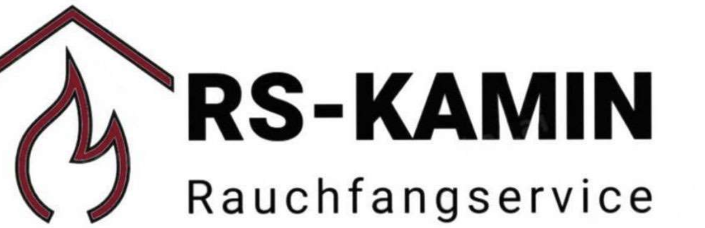 |
RS Kaminbau - RauchfangserviceIHR VERTRAUEN IST UNSER WICHTIGSTER PARTNER |
| Tel: +43 664 3446467 | | | Email: buzluk.o92@gmail.com |
Geht es um Kaminbau, Kaminsanierung und Kaminreparatur, so sind wir Ihre zuverlässigen Partner mit Sitz in Wien. Das kompetente Team berät Sie zu allen unseren Leistungen wie den Bau von Edelstahlkaminen, der Kaminkopfsanierung, dem Kaminausschleifen, Kaminfräsen sowie den Rohreinzug. Für jede Ausgangssituation haben wir die perfekte Lösung. Unser Ziel: Ihre Zufriedenheit mit einem Kamin, der perfekt zieht und damit für hohe Effizienz bei der Verbrennung sowie gute Raumluft sorgt.
| 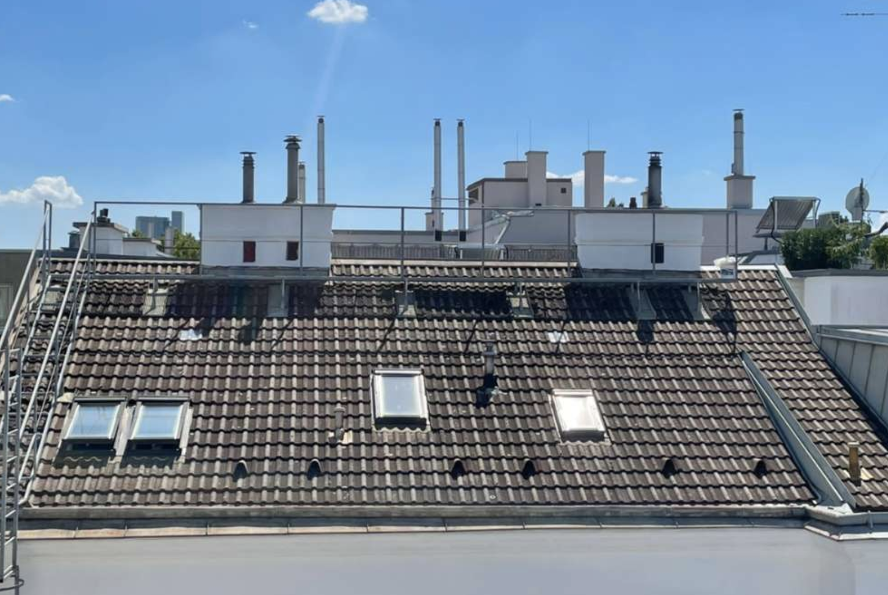 |
Edelstahlkamin und MontageIhr Kamin aus Edelstahl hält lange und ist unempfindlich gegen Feuchtigkeit und Korrosion. |
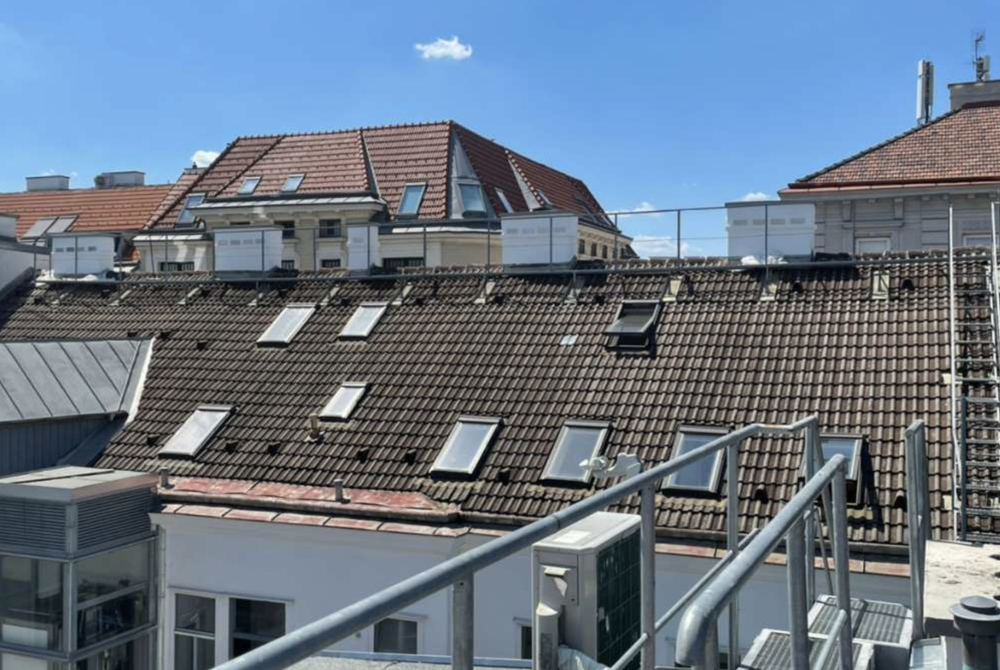 |
| 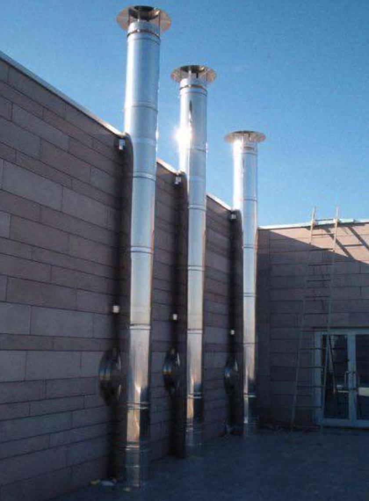 |
KaminkopfsanierungDer Kaminkopf ist Wind und Wetter ausgesetzt. |
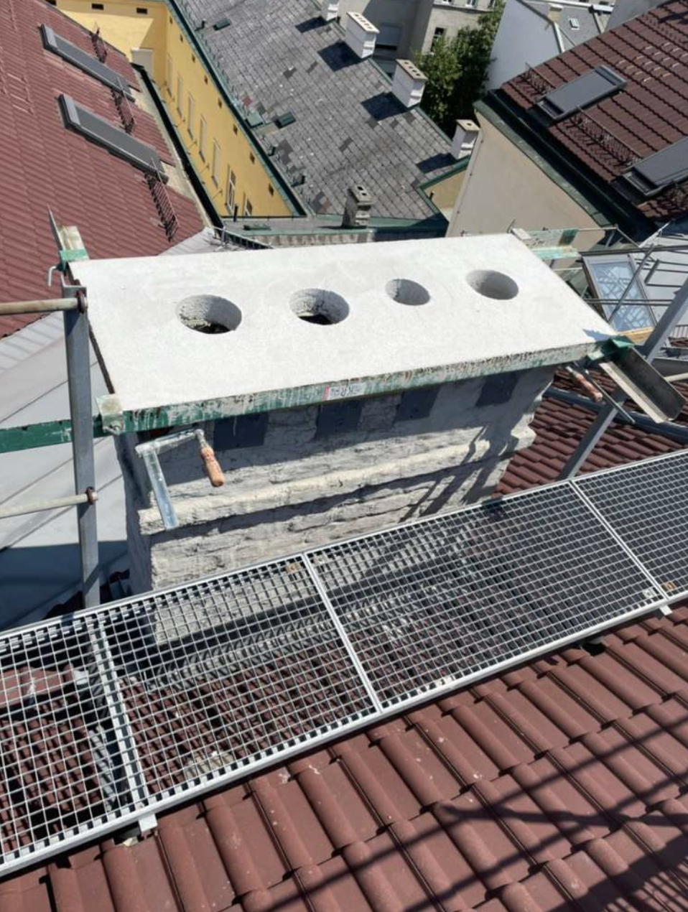 |
| 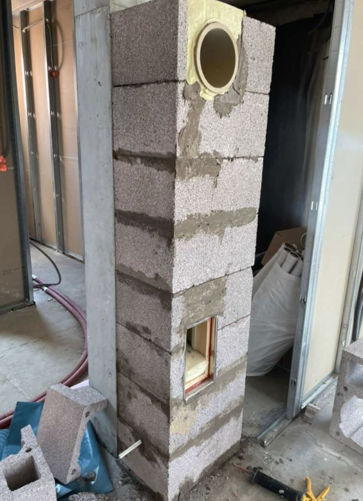 |
KaminausschleifungEin bestehender gemauerter Kamin kann durch Ausschleifung wieder |
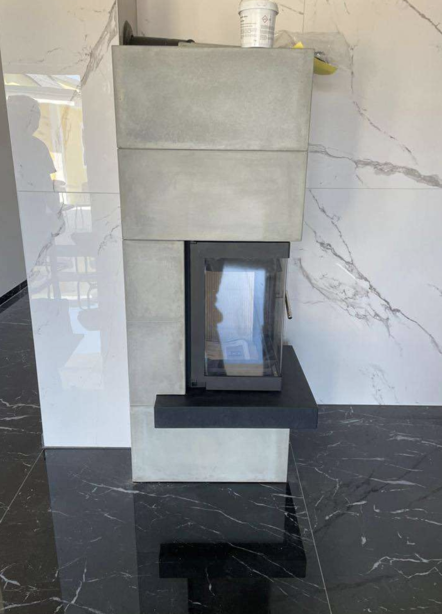 |
| 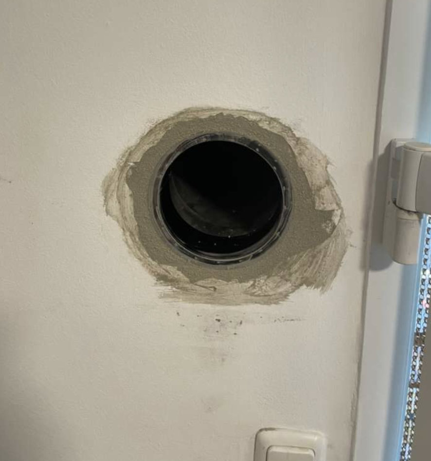 |
KaminfräsenDas Kaminfräsen dient der Vergrößerung des Querschnitts im gemauerten Kamin. |
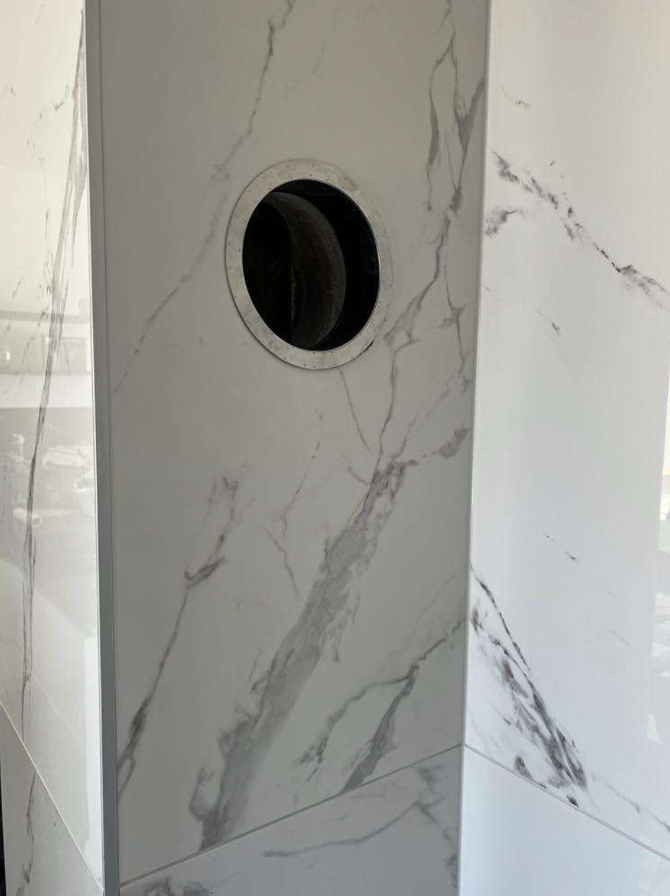 |
| 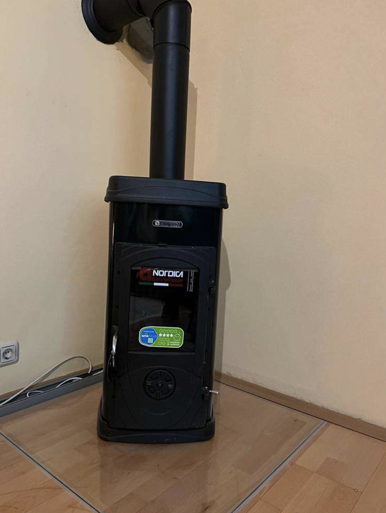 |
RohreinzugDer Rohreinzug ist die perfekte Methode, etwa im Zuge der Sanierung eines Altbaus |
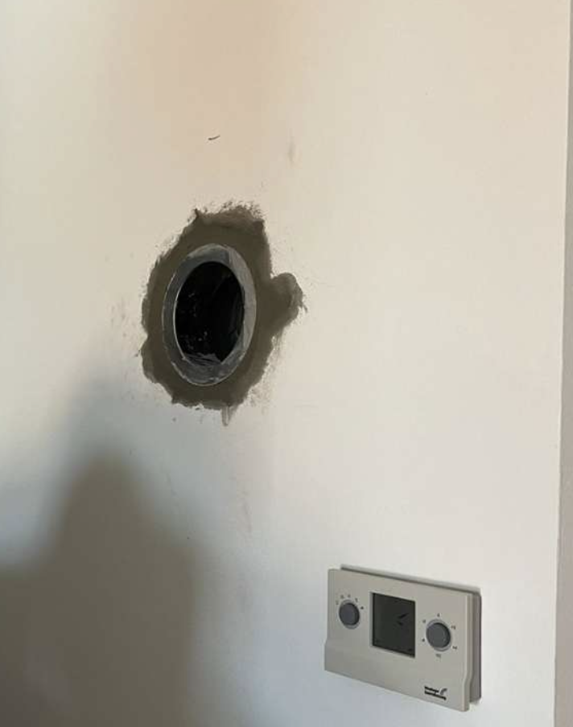 |
Besuchen Sie unser Willhaben-Inserat:↓ |
oder |
Schreiben Sie uns eine Nachricht: |
|
Rs Kaminbau
Ömer Buzluk |